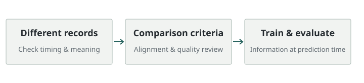
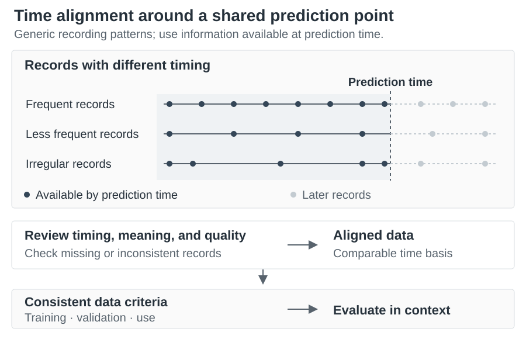

Manufacturing time-series alignment and ML pipelines
Records collected at different times can create misleading comparisons or expose a model to information unavailable when it makes a prediction. I aligned records around the intended prediction time and prepared consistent inputs for training and evaluation.
- Problem:
- Misaligned records and information unavailable at prediction time
- Output:
- Training and evaluation inputs aligned with their intended use

Problem and context
Records from different sources cannot always be compared immediately on a common time basis. Without examining recording time and when information becomes valid, relationships can be misaligned or future information can enter training inputs.
The goal was to create training data whose meaning matched actual usage, beyond bringing records together in one place.
My role
I participated in validation, preprocessing, time-series alignment, and training/evaluation workflow construction. My public experience also includes dashboard prototypes, proof-of-concept work, and field testing.
Approach


Time reference and data quality
I examined differences in collection intervals and record meaning and organized data on a comparable basis. Missing or inconsistent records were checked rather than treated as normal observations.
Consistency between learning and use time
Inputs were constructed from information available at the intended prediction time. I checked whether preprocessing and feature-construction criteria were consistent across training, validation, and use.
Evaluation and review
I examined what errors meant in the actual usage context, alongside prediction scores. Prototypes and tests supported a workflow for interpreting data and checking model results.
Scope
I worked on data preparation, modeling and evaluation, and prototype review.
This page describes general time-series challenges and decision criteria without disclosing actual data fields, files, internal implementation, throughput, or screens.